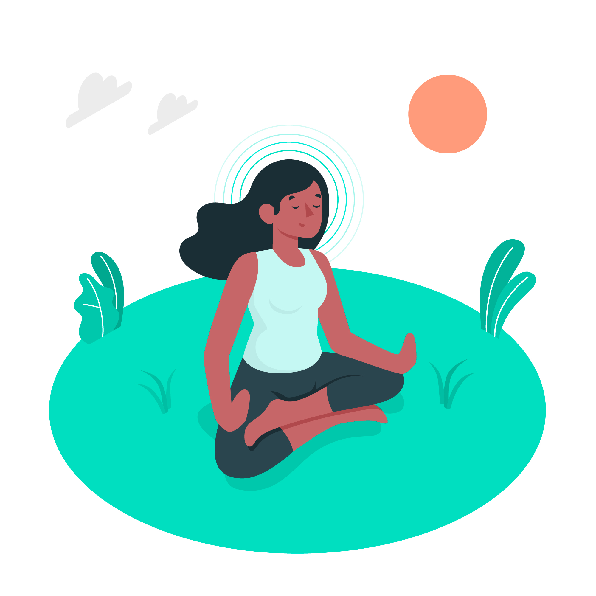

<div class="container">
  <div class="row justify-content-evenly">
    <div class="col-4">
      <div class="corpo">
      <div class="metade-texto">
        <div class="section">
          <h2>Quero ser um profissional da saúde na plataforma, como funciona?</h2>
          <p>
            Para se tornar um profissional da saúde em nossa plataforma, você deve estar formado na área de saúde mental.
          </p>
        </div>

        <div class="section">
          <h2>Qual o primeiro passo?</h2>
          <p>Se cadastrar na plataforma.</p>
        </div>

        <div class="section">
          <h2>Qual tipo de modalidade posso oferecer?</h2>
          <p>Modalidade presencial e remota. O profissional irá disponibilizar a agenda dos dias que poderá fazer o atendimento, e a forma como irá acontecer (presencial ou remoto), fica a desejo do paciente qual irá escolher.</p>
        </div>

        <div class="section">
          <h2>Como funciona o atendimento remoto?</h2>
          <p>A modalidade remota irá funcionar por meio de um link que o paciente e profissional irão receber para uma chamada de vídeo.</p>
        </div>

        <div class="section">
          <h2>Como funciona o atendimento presencial?</h2>
          <p>A profissional irá disponibilizar o endereço de seu consultório e o paciente irá receber o endereço ao marcar a consulta.</p>
        </div>

        <div class="section">
          <h2>Valores</h2>
          <p>O profissional deverá disponibilizar o valor da consulta para que o paciente se informe.</p>
        </div>
      </div>
      <div class="metade-imagem">
        
      </div>
    </div>
  </div>
</div>
